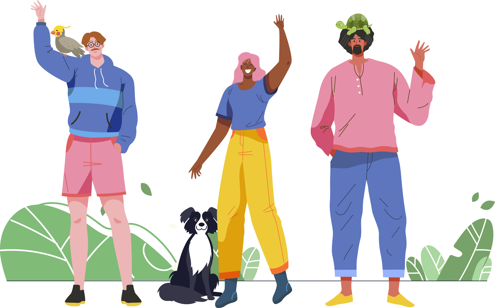

<div class="o-inicio-container">
    <div class="o-buttons-container-all">
        <h3 class="o-tittle-inicio">Ingreso de Datos</h3>
        <div class="o-buttons-btns">
            <button class="o-btns-inicio" routerLink="usuario-data" routerLinkActive="o-active">Usuario</button>
            <button class="o-btns-inicio" routerLink="mascota-data" routerLinkActive="o-active">Mascota</button>
            <button class="o-btns-inicio" routerLink="colaborador-data" routerLinkActive="o-active">Colaborador</button>
        </div>

        <!-- Estos son los componentes para generar las rutas hijas para inicio -->
        <!-- <app-usuario-data></app-usuario-data> -->
        <!-- <app-mascota-data></app-mascota-data> -->
        <!-- <app-colaborador-data></app-colaborador-data> -->
        <router-outlet></router-outlet>

    </div>
    <div class="o-image-inicio">
        
    </div>
</div>
